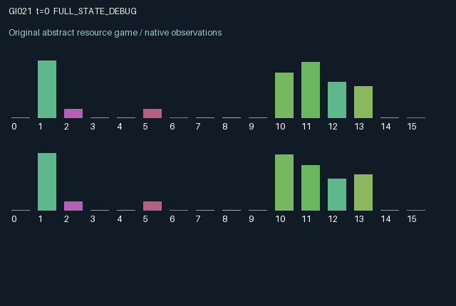

GI021 / LEGACY_ARRAY
Transportable work with separated ownership and processing fees
2 agents5 actions16 observation columns32 original horizonRuntime: PASS
Release verification episode
Untrained uniform legal actions. Actual JAX state sampled along the full original episode; full-state debug camera. No human performance or learning claim.

Run this game
crucibles play --game 21
Start Python locally, then open the address printed by the terminal. Installation, multiplayer, takeover and keyboard controls →
Objective, rewards & ending
Exact task contract
{
"objective": "Accumulate original per-agent rewards under the interaction rules in mechanism.md.",
"natural_termination": "No early terminal; original t >= 32 horizon.",
"exact_transition_and_reward_source": "def raw_step(self, key, state, actions):\n legal = self.legal_actions(state)\n inject = (actions == 1) & legal[:, 1]\n process = (actions == 2) & legal[:, 2]\n route = (actions == 3) & legal[:, 3]\n maintain = (actions == 4) & legal[:, 4]\n load = jnp.sum(state[\"queue\"], axis=1)\n safe_load = jnp.maximum(load, 0.000001)\n processing_amount = jnp.where(process, jnp.minimum(load, 0.35 + 0.65 * state[\"condition\"]), 0.0)\n routing_amount = jnp.where(route, jnp.minimum(load, 1.0), 0.0)\n processed = state[\"queue\"] * (processing_amount / safe_load)[:, None]\n sent = state[\"queue\"] * (routing_amount / safe_load)[:, None]\n remainder = jnp.maximum(state[\"queue\"] - processed - sent, 0.0)\n injected = jnp.eye(2, dtype=jnp.float32) * inject.astype(jnp.float32)[:, None]\n before_storage = remainder + injected + state[\"near\"]\n surviving = 0.985 * before_storage\n storage_load = jnp.sum(surviving, axis=1)\n storage_factor = jnp.minimum(1.0, 4.0 / jnp.maximum(storage_load, 0.000001))\n queue = surviving * storage_factor[:, None]\n near = 0.985 * state[\"far\"]\n far = 0.985 * jnp.roll(sent, 1, axis=0)\n storage_loss = jnp.sum(before_storage - queue, axis=0)\n transport_loss = 0.015 * jnp.sum(state[\"far\"] + sent, axis=0)\n owner_dividend = 0.6 * jnp.sum(processed, axis=0)\n station_fee = 0.2 * jnp.sum(processed, axis=1)\n utility = (\n owner_dividend + station_fee\n - 0.08 * inject.astype(jnp.float32)\n - 0.035 * route.astype(jnp.float32)\n - 0.03 * maintain.astype(jnp.float32)\n - 0.08 * (storage_loss + transport_loss)\n )\n rewards = jnp.tanh(utility).astype(jnp.float32)\n energy = jnp.clip(\n state[\"energy\"] + 0.08 + 0.12 * (actions == 0).astype(jnp.float32)\n - 0.25 * inject.astype(jnp.float32)\n - 0.22 * process.astype(jnp.float32)\n - 0.16 * route.astype(jnp.float32)\n - 0.12 * maintain.astype(jnp.float32),\n 0.0, 1.0,\n )\n condition = jnp.clip(\n state[\"condition\"] - 0.004\n - 0.10 * process.astype(jnp.float32)\n - 0.03 * route.astype(jnp.float32)\n + 0.20 * maintain.astype(jnp.float32),\n 0.25, 1.0,\n )\n next_state = {\n \"t\": state[\"t\"] + jnp.array(1, dtype=jnp.int32),\n \"queue\": queue.astype(jnp.float32),\n \"near\": near.astype(jnp.float32),\n \"far\": far.astype(jnp.float32),\n \"energy\": energy.astype(jnp.float32),\n \"condition\": condition.astype(jnp.float32),\n \"last_reward\": rewards,\n }\n done_all = next_state[\"t\"] >= 32\n dones = jnp.full((2,), done_all, dtype=jnp.bool_)\n info = {\"done_all\": done_all, \"legal_mask\": self.legal_actions(next_state)}\n return self.observe(next_state), next_state, rewards, dones, info"
}Declared per-step reward bounds: -1.0 to 1.0. Observability: source_defined.
Rules
Original mechanism document (historical status wording retained)
# Transportable work with separated ownership and processing fees Candidate: astra-d2-00021. This is a parentless source proposal with no supplied predecessor, score, or feedback. The queue is a two-by-two matrix: rows denote processing stations and columns denote the owner of the work. Each agent controls one station. Action 0 rests, restoring energy faster. Action 1 injects one unit of locally owned work. Action 2 processes a fraction of the station's current mixed queue, with throughput determined by persistent machine condition. Action 3 dispatches up to one unit of the local mixture to the other station. Action 4 repairs machine condition. Non-rest actions require enough energy, and processing and routing additionally require a nonempty queue. Processing preserves the distinction between station and owner: the processor receives a fee, while each owner receives a dividend proportional to its work completed at either station. Thus routing changes who can supply the processing action and who can earn the processing fee. An agent can help or defer the other agent's income by processing or retaining its work. Injection and routing also compete for finite station capacity, so one agent's deliveries can cause losses attributed to the owner of the discarded work. A newly dispatched mixture enters a far pipeline, moves to a near pipeline one transition later, and joins the destination queue another transition later. Arriving work cannot be processed until a subsequent action because processing uses the previous queue. Every storage or transport stage loses 1.5 percent of its mass. Station queue capacity is four units, with proportional loss across owners on overflow. Machine wear and energy consumption persist, creating delayed tradeoffs between throughput, maintenance, rest and outsourcing. Both agents see the ownership composition of both current queues, but transit observations expose total mass only. The transit ownership mixture remains part of the latent state. The sixteen columns are time fraction, role sign, own-owned work at own station, other-owned work at own station, own-owned work at the other station, other-owned work at the other station, own and other near-pipeline totals, own and other far-pipeline totals, own and other energy, own and other machine condition, and own and other last reward. Queue entries are divided by four. Utility combines an owner dividend of 0.6 per completed unit, a station fee of 0.2 per processed unit, action costs for injection, routing and maintenance, and owner-attributed spoilage costs. Reward is tanh of this finite utility, bounding each reward in [-1, 1] without changing its sign. The source retains the terminal state and terminates both agents at transition 32. This draws on generic queueing, production-network and outsourcing mechanisms. The proposed causal feature is that delayed movable work keeps its ownership claim while its processing location and service controller change. This is an intended mechanism description, not evidence of novelty, operational eligibility, compilation or learning benefit. No candidate code has been executed by the author.
Commands
0Rest
1Inject owned work
2Process local queue
3Route work to partner
4Maintain station
Roles & abilities
agent_0 Original legacy agent; see mechanism and source
agent_1 Original legacy agent; see mechanism and source
Observation permissions
Training receives only the original observation rows. Role cameras use declared visibility; debug cameras are explicitly marked. Local benchmark records log debug exposure and role takeover history.
Exact observation layout
[
{
"slice": [
0,
16
],
"visibility": "exact original observe() below",
"source_code": "def observe(self, state):\n ids = jnp.arange(2, dtype=jnp.int32)\n other = 1 - ids\n near_load = jnp.sum(state[\"near\"], axis=1)\n far_load = jnp.sum(state[\"far\"], axis=1)\n obs = jnp.zeros((2, 16), dtype=jnp.float32)\n obs = obs.at[:, 0].set(state[\"t\"].astype(jnp.float32) / 32.0)\n obs = obs.at[:, 1].set(jnp.array([-1.0, 1.0], dtype=jnp.float32))\n obs = obs.at[:, 2].set(state[\"queue\"][ids, ids] / 4.0)\n obs = obs.at[:, 3].set(state[\"queue\"][ids, other] / 4.0)\n obs = obs.at[:, 4].set(state[\"queue\"][other, ids] / 4.0)\n obs = obs.at[:, 5].set(state[\"queue\"][other, other] / 4.0)\n obs = obs.at[:, 6].set(near_load)\n obs = obs.at[:, 7].set(jnp.roll(near_load, 1))\n obs = obs.at[:, 8].set(far_load)\n obs = obs.at[:, 9].set(jnp.roll(far_load, 1))\n obs = obs.at[:, 10].set(state[\"energy\"])\n obs = obs.at[:, 11].set(jnp.roll(state[\"energy\"], 1))\n obs = obs.at[:, 12].set(state[\"condition\"])\n obs = obs.at[:, 13].set(jnp.roll(state[\"condition\"], 1))\n obs = obs.at[:, 14].set(state[\"last_reward\"])\n obs = obs.at[:, 15].set(jnp.roll(state[\"last_reward\"], 1))\n return obs"
}
]Entity visibility & attributes
[]
Actual verification & provenance
Per-game execution receipt
{
"game": "gi021",
"status": "PASS",
"verification_revision": 2,
"source_sha256": "329a6bd922c44b4a10f069706102c6897696a1e881593b013cd19db45ad6a6c6",
"seed": 20261101,
"runtime": {
"jax": "0.4.38",
"numpy": "1.26.4",
"devices": [
"TFRT_CPU_0"
]
},
"dimensions": {
"num_agents": 2,
"observation_size": 16,
"num_actions": 5,
"max_steps": 32
},
"checks": {
"eager_reset": {
"status": "PASS",
"seconds": 0.7641582489013672
},
"observation_spaces_legal_masks": {
"status": "PASS",
"seconds": 0.2261204719543457
},
"eager_step": {
"status": "PASS",
"seconds": 0.6421101093292236
},
"jit_reset": {
"status": "PASS",
"seconds": 0.2548360824584961
},
"jit_step": {
"status": "PASS",
"seconds": 0.43281030654907227
},
"eager_jit_integer_parity_float_measurement": {
"status": "PASS",
"seconds": 0.0005125999450683594
},
"jit_vmap_reset": {
"status": "PASS",
"seconds": 0.43438148498535156
},
"jit_vmap_step": {
"status": "PASS",
"seconds": 0.42027926445007324
},
"outer_autoreset_api": {
"status": "PASS",
"seconds": 0.7147552967071533
},
"full_original_horizon_episode_and_render": {
"status": "PASS",
"seconds": 1.1032142639160156
}
},
"human_scores": null,
"browser_controls": "PENDING",
"failures": [],
"elapsed_seconds": 5.437968730926514,
"float_parity_max_abs": 9.313225746154785e-10,
"numerical_parity": "UNDETERMINED_NONZERO_FLOAT_DIFFERENCE",
"raw_terminal_absorbing": "NOT_PART_OF_ORIGINAL_LEGACY_CONTRACT",
"terminal_outer_reset": "PASS",
"episode_steps": 32,
"scripted_random_returns": [
2.320353256109229,
2.155600492260419
],
"terminal": true,
"demo_information": "FULL_STATE_DEBUG",
"demo_frames": 33,
"render_roles_checked": 2
}Chromium control verification
{
"game": "gi021",
"status": "PASS",
"human_scores": null,
"engineering": true,
"checks": [
"catalog_selected_and_real_native_reset",
"dom_queue_and_native_step",
"second_participant_ownership_and_native_joint_step",
"all_roles_individually_controllable_no_role_cap",
"explicit_debug_camera",
"release_to_pure_ai_without_reset"
],
"ui_sha256": "15b5861d23b3c42811865c954d5a988280bbfd21cf8e93754be2437a027158c5",
"seconds": 4.149958848953247
}Original identity and file hashes
{
"id": 21,
"key": "gi021",
"title": "Transportable work with separated ownership and processing fees",
"summary": "",
"tags": [],
"family": "legacy_array",
"dimensions": {
"num_agents": 2,
"observation_size": 16,
"num_actions": 5,
"max_steps": 32
},
"source_sha256": "329a6bd922c44b4a10f069706102c6897696a1e881593b013cd19db45ad6a6c6",
"manifest_sha256": "3bb6769aa03bfc1689b060370d88d3b24e25470166f15bfa4c3b496303aa4fcb",
"files": [
{
"file": "candidate.py",
"sha256": "329a6bd922c44b4a10f069706102c6897696a1e881593b013cd19db45ad6a6c6",
"bytes": 5438,
"origin": "work/exp_2/astra_generation/discovery_v2/initial/candidate_00021/attempt_00/candidate.py"
},
{
"file": "mechanism.md",
"sha256": "4aeb118cf1a1789370f40927d36b9ca6b5e01d907e84ae98a1ab8a6c0a5114f5",
"bytes": 3162,
"origin": "work/exp_2/astra_generation/discovery_v2/initial/candidate_00021/attempt_00/mechanism.md"
}
],
"original_status": "LEGACY_SOURCE",
"original_saved_replay": false,
"release_validation": "PASS",
"human_scores": null,
"browser_validation": "PASS"
}